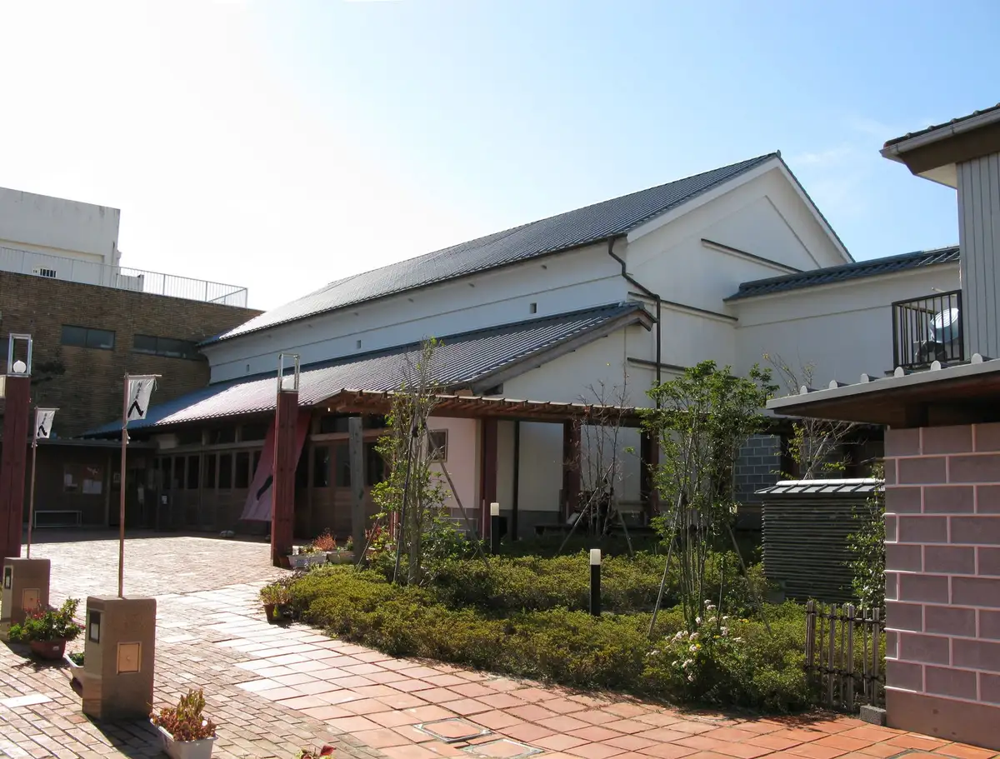
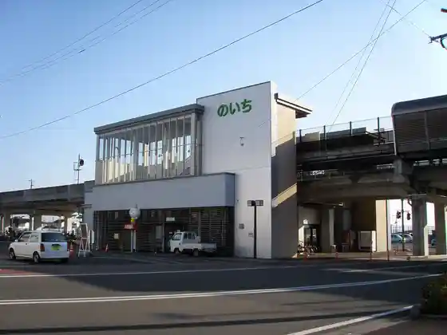
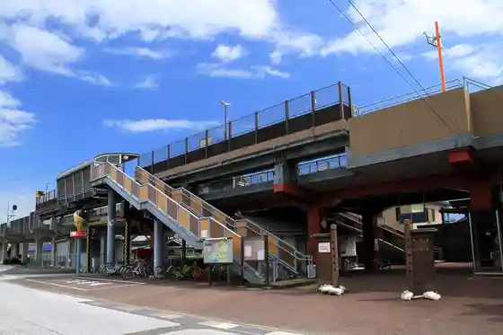
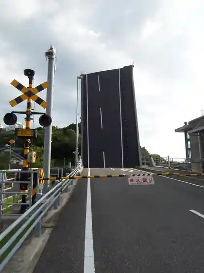
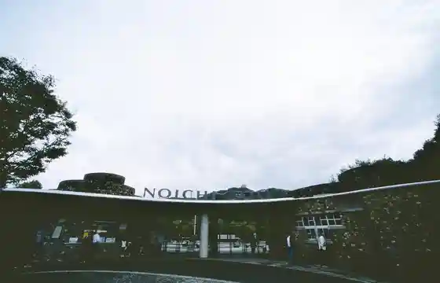

Konan
Konan · Kochi
Konan
Highlighted on the Kochi map.

Stay
Resort Hotel Umibe no Orchard
Guest House Suisen
Konan Saikuringutaminaru Umi no Yadoshioya Yado
Kochi Kuroshio Hotel
Dining
Hyakka
Fuku Teba no Ichi Mise
Kafedo Akira
Okashi no Iitokoro
Kashi Workshop Konseruto
Kafe
Yatsurugi Den no City Ekimae Mise
An Gu Raku
Buta Taro no City Mise
Mokko
Inoe Wainarii no Ichi Jozosho &SHOP
Buraku
O Konomi Yaki Mandai
Sawa Mochi Chaya
Baru Kamenosuke
Ichigo Ya
Experience
Roadside Station Yasu
Sights
E Kinzo
no Ichi Eki

Akaoka Eki

Tayui Minato Kado Hashi

Kochi Prefectural no Ichi Dobutsu Park

Yasu Eki